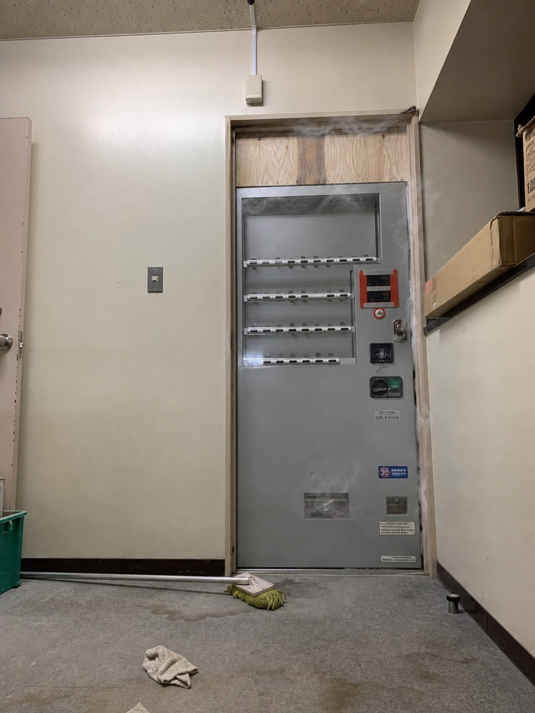

── 記録_005 ──
入口工事の日
入口の扉を作る日。
最初から、普通の扉にするつもりはなかった。
店の入口は、少しわかりにくい方がいい。
知っている人だけが入れるような、どこか別の場所に繋がっているような、そういう入口にしたい。
そんな話は、最初の頃から出ていた。
そのために用意されたのが、タバコの自動販売機だった。
実際に使われていたものを加工して、中を抜き、軽くして、扉として動くようにする。
最初に聞いたときは、意味がわからなかった。
自動販売機は自動販売機で、扉は扉だと思っていた。
でも、加工された実物を見たら、なるほどと思った。
重くて、黒くて、少し古い。
中身は抜かれているのに、ちゃんと自動販売機の気配が残っていた。
この扉をくぐった人間は、少しだけ違う場所に来た気がするだろう。
そういう扉だと思う。
蝶番を取り付けているとき、扉が一度だけ勝手に動いた。
ゆっくりと、外側に開いた。
風ではなかった。
窓は閉まっていた。
誰も触っていなかった。
作業していた全員が、それを見た。
でも、誰も手を止めなかった。
最初から、そういう入口を作っていたのだから。

入口工事の日。加工されたタバコの自動販売機。
隠し扉案は、かなり最初からあった気がする。実物のタバコ自販機を加工して、中を抜いて、扉として使えるようにした。取り付けたとき、なんかしっくりきたんだよな。「これだ」って感じがした。